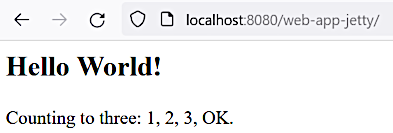

Server setup
Server setup
Server setup
This section describes simple Jetty server installation and setup. Small useless application is going to be created and run for a sanity check.
Home page: https://www.eclipse.org/jetty/
Downloads: https://www.eclipse.org/jetty/download.php
Checksums: https://www.eclipse.org/jetty/download_info.php
Version 9.4.51.v20230217 is used. Following the instructions [4, Running Jetty]:
jetty-distribution-9.4.51.v20230217.zip/jetty-distribution-9.4.51.v20230217 to jetty_9_4_51.JETTY_HOME environment variable that points the jetty_9_4_51 directory.JETTY_BASE environment variable that points the directory where the applications
will be located.Execute the following commands to initialize the Jetty base directory:
>cd /d %JETTY_BASE%
>java -jar %JETTY_HOME%\start.jar --create-startd
MKDIR : ${jetty.base}\start.d
INFO : Base directory was modified
>java -jar %JETTY_HOME%\start.jar --add-to-start=http,deploy
INFO : webapp transitively enabled, ini template available with --add-to-start=webapp
. . .
MKDIR : ${jetty.base}\webapps
INFO : Base directory was modified
>java -jar %JETTY_HOME%\start.jar
2023-03-18 11:36:14.115:INFO::main: Logging initialized @439ms to org.eclipse.jetty.util.log.StdErrLog
. . .
2023-03-18 11:36:14.306:INFO:oejs.AbstractConnector:main: Started ServerConnector@cd2dae5{HTTP/1.1, (http/1.1)}{0.0.0.0:8080}
2023-03-18 11:36:14.306:INFO:oejs.Server:main: Started @630msIn a browser navigate to http://localhost:8080/ to see an "Error 404 - Not Found" page. To stop
the server press Ctrl+C.
As we are going to use JSP, adding the jsp module, also see the Jetty documentation [4]:
>java -jar %JETTY_HOME%\start.jar --add-to-start=jsp
INFO : mail transitively enabled
INFO : apache-jsp transitively enabled
INFO : jsp initialized in ${jetty.base}\start.d\jsp.ini
INFO : jndi transitively enabled
INFO : annotations transitively enabled
INFO : transactions transitively enabled
INFO : plus transitively enabled
INFO : Base directory was modified>mvn archetype:generate -DarchetypeGroupId=org.apache.maven.archetypes -DarchetypeArtifactId=maven-archetype-webapp -DarchetypeVersion=1.4 -DgroupId=world.someone -DartifactId=web-app-jetty -DinteractiveMode=falseFor more details about Maven Webapp Archetype see:
mvn archetype:help -Dgoal=generate -Ddetail=trueAfter some reformatting and deleting unnecessary things the pom.xml file looks like the following:
<?xml version="1.0" encoding="UTF-8"?>
<project xmlns="http://maven.apache.org/POM/4.0.0"
xmlns:xsi="http://www.w3.org/2001/XMLSchema-instance"
xsi:schemaLocation="http://maven.apache.org/POM/4.0.0
http://maven.apache.org/xsd/maven-4.0.0.xsd">
<modelVersion>4.0.0</modelVersion>
<groupId>world.someone</groupId>
<artifactId>web-app-jetty</artifactId>
<version>1.0-SNAPSHOT</version>
<packaging>war</packaging>
<properties>
<project.build.sourceEncoding>UTF-8</project.build.sourceEncoding>
<maven.compiler.source>8</maven.compiler.source>
<maven.compiler.target>8</maven.compiler.target>
</properties>
<build>
<finalName>${project.artifactId}</finalName>
<directory>${TMP_MAVEN_BUILDS_DIR}${project.artifactId}</directory>
</build>
</project>
The build/finalName element is added to avoid the version in the artifact war-file name.
The build/directory element is added to bring the generated artifacts out of the working project
directory. This will significantly reduce a possible backup size. The environment variable
TMP_MAVEN_BUILDS_DIR must be defined in the system. Such solution should hardly be applied
in real projects.
The deployment descriptor look like this:
<!DOCTYPE web-app PUBLIC
"-//Sun Microsystems, Inc.//DTD Web Application 2.3//EN"
"http://java.sun.com/dtd/web-app_2_3.dtd">
<web-app>
<display-name>JSP Example Application</display-name>
</web-app>Note
The current DOCTYPE declaration though being old-fashioned still works. There are
controversial information on the Internet about the proper schemata declarations, and also
IntelliJ IDEA complains with "element 'web-app' must be declared" when newer declarations
are used. Looks like it takes too much time to find the way of avoiding it.
A newer style web.xml may be generated in Eclipse: File — New — Dynamic project,
then at some later step don't forget to check the "Generate web.xml deployment descriptor"
checkbox. But this web.xml still causes validation complaints in IntelliJ IDEA.
The sample index.jsp file was edited to demonstrate that the specific JSP syntax works
(also see [3]):
<html><body>
<h2>Hello World!</h2>
<p>Counting to three:
<% for (int i=1; i<4; i++) { %>
<%= i %>,
<% } %>
OK.</p>
</body></html>This simple setup looks like being enough for running in Jetty server. Just need to build the artifact:
>cd web-app-jetty
>mvn clean package
Copy the file web-app-jetty.war from the current target directory into the %JETTY_BASE%/webapps
directory. Make sure that the Jetty jsp is activated
(see here).
Stop the Jetty server by pressing Ctrl+C, if it's running, and start it again:
>java -jar %JETTY_HOME%\start.jarNavigate to http://localhost:8080/web-app-jetty/ to see the result:

Note
Actually it's not necessary to restart the server. Just copying the file web-app-jetty.war
to the webapps directory may be enough. The Jetty server will automatically detect this
replacement and reload the application in about 5 sec.
Git commit:
429b1fd4f65f6182962255078e0d32bd02949b50simplest web app run in Jetty
Git commit:31a1cc7364bc8d81cbba2230eedd929714ddd8a0Maven target directories redefined
Serving static content from inside the WAR files was discussed in the StackOverflow question Serve HTML files from inside WAR file with Jetty server and Spring MVC.
The suggestion was to follow the instructions at [6, 1.11.10. Static Resources],
particularly adding the following definitions into the servlet dispatcher XML configuration file
front-controller-servlet.xml:
. . .
<mvc:resources mapping="/html/**" location="/static/"/>
<mvc:default-servlet-handler/>
. . .
The mvc namespace should be declared the following way:
<beans
. . .
xmlns:mvc="http://www.springframework.org/schema/mvc"
xsi:schemaLocation="http://www.springframework.org/schema/beans
. . .
http://www.springframework.org/schema/mvc
http://www.springframework.org/schema/mvc/spring-mvc.xsd
. . .
">
. . .So the URL http://localhost:8080/web-app-spring/html/static.html returns the page
src/main/webapp/static/static.html.
For more details and examples see [7.1] and [7.2].
Git commit:
51b4238098206ff2e119614a2909db12355a206fserving static content added